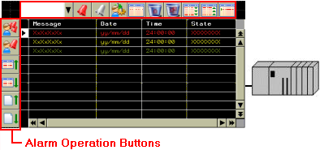
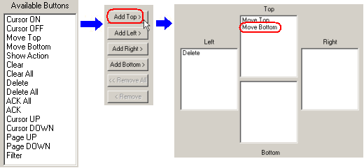
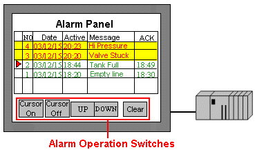
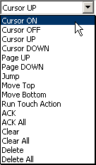
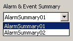
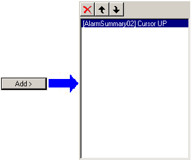

|
|
|
|
|
|
|
|
You can create alarm operations by using the built-in alarm operation buttons or by using switches and scripts. In Vijeo-Designer, the recommended method is to use the built-in alarm operation buttons. For more information on how to create operations using scripts, see Section 18.3.8.2, Alarm and Event Summary Methods.
For built-in alarm operation buttons, define the operation buttons and the position where you want your buttons to be displayed on the alarm summary. To obtain a list of the available alarm operations and for property descriptions, see Section 16.2.6.4, Buttons Tab.

Double-click the alarm summary to display the Alarm Summary Settings dialog box.
Select the Buttons tab, and select Enable Buttons.
In the Buttons Available list, select the alarm operation and click the Add Top, Add Left, Add Right, or Add Bottom button. The selected operation is listed in the appropriate Top, Left, Right, or Bottom box. Repeat this step to add more alarm operations.

Select the button size that you want.
Click OK.
You can use the Switch part to interact with the alarm summary. Alarm operation types are very similar to built-in alarm operations. Also, you can create a Jump button, which allows you to jump to a specific line. For more information, see Section 9.2, Creating Switches.

Select the Switch icon from the Graphical Objects parts toolbar.
Draw the switch on the panel and the Switch Settings dialog box appears.
In the Touch Action tab, from the Operation list select Alarm.
Select the alarm operation for the switch. For more information, see Section 16.2.6.4, Buttons Tab.


Cursor UP, Cursor DOWN, Page UP, and Page DOWN are available only when you set up operations in the When Touch and When Release tabs.
Filter is available only through operation buttons.
Specify which alarm summary the switch controls.

Click Add.

Repeat the steps as necessary.
You can add up to 32 operations on a single switch.
For setting up other switches, see Section 9.2, Creating Switches.
To close the dialog box, click OK.